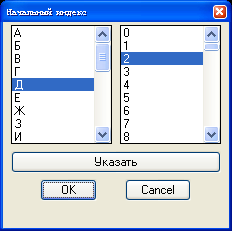

INDEX
Выполняет вывод на экран диалогового окноа, позволяющего задать символ и индекс для генерируемых впоследствии нижеперечисленных объектов:
- обозначение баз (команда BAS);
- обозначение направления взгляда (команда LOOK);
- обозначение разреза (команда CUT).
При каждом последующем вызове перечисленных выше команд:
- сначала в алфавитном порядке увеличивается символ;
- затем, при достижении символом максимального значения, устанавливается первый символ и индекс увеличивается на единицу.
Символ с индексом 0 изображается как символ без индекса.
На рисунке 1 приведен диалог для установки текущего символа и индекса.

Рисунок 1 - диалог для установки текущего символа и индекса.
Смотри также команды:
К оглавлению....